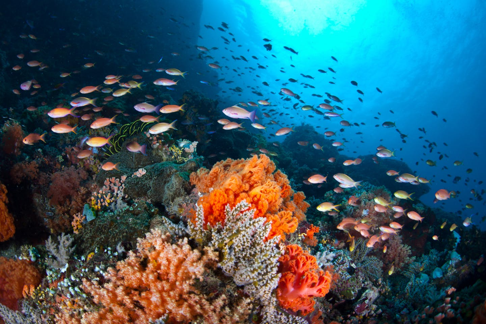
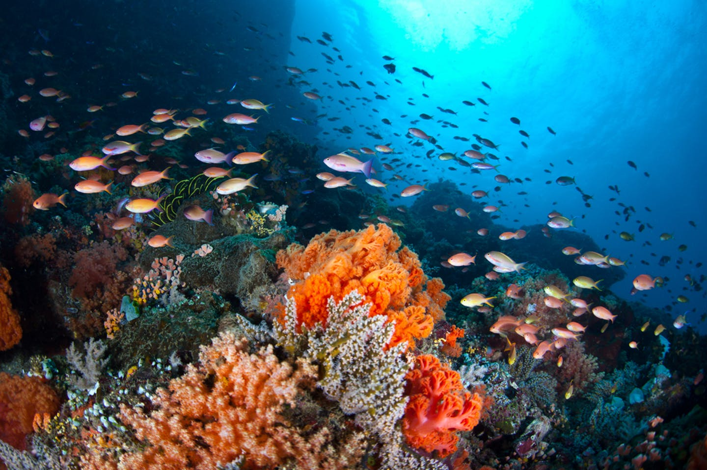

International standards in the LAM
The course describes different LAM (Libraries, Archives and Museums) domains like metadata element sets and value vocabularies.
Knowledge
Organization
The course reflects on the concept of KO (Knowledge Organization) and in particular on the role of ontologies as conceptual models.
Semantic Digital Activities
We analyse different semantic (digital) activities in LAM througt KO methods.
Real world
cases
We examine specific case studies such as "Europeana" or "The Reload project".
 

The challenge of our lives
This project relies on our team's belief about global warming being the biggest challenge that we, as a society, have to face in the present and in the decades to come. Mass extinction, environmental collapses, food and water shotage are just some of the many consequence of this epochal phenomenon that our planet is living. We must radically reshape our system and our daily habits in order to adapt to the Anthropocene era: today, we bring this challenge in the domain of Knowledge Organization.
Talking about catastrophe
How do we talk about global warming? What kind of narrations are developed in front of this epocal problem? The climate emergency is something difficult to grasp for human perception and cognition. The philosopher Timothy Morton defined it as a “hyperobject”, an object too vast in time and space to really be understood. Therefore, humanity is trying create narrations of different kinds across a different number of media. We selected our items so to have an useful picture of such different stories: from the first climate scientist, Wallace Broecker, to the activism of the young Greta Thumberg, across the work of artists, thinkers and entrepreneurs.
Our Team
Alessandro Bertozzi
Back-end developer / NLP engineerAnimi est delectus alias quam repellendus nihil nobis dolor. Est sapiente occaecati et dolore. Omnis aut ut nesciunt explicabo qui. Eius nam deleniti ut omnis repudiandae perferendis qui. Neque non quidem sit sed pariatur quia modi ea occaecati. Incidunt ea non est corporis in.

Gabriele Fiorenza
Interaction media Designer / VR SpecialistAspernatur iste esse aliquam enim et corporis. Molestiae voluptatem aut eligendi quis aut. Libero vel amet voluptatem eos rerum non doloremque. Dolores eum non.
Samuele Spotti
Interaction media Designer / UI & UX managerUt enim possimus nihil cupiditate beatae. Veniam facere quae non qui necessitatibus rerum eos vero. Maxime sit sunt quo dolor autem est qui quaerat aliquid. Tenetur possimus qui enim.
Alessandro Y. Longo
AccountantSint qui cupiditate. Asperiores fugit impedit aspernatur et mollitia. Molestiae qui placeat labore assumenda id qui nesciunt quo reprehenderit. Rem dolores similique quis soluta culpa enim quia ratione ea.